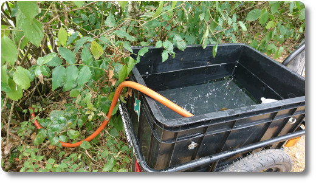

Gießaktion mit Fahrradanhänger
Hallo zusammen. Heute Mal ein Bilde von meinen regelmäßigen Gieß-Aktionen. Wie in ganz vielen Gegenden in Deutschland ist es derzeit auch bei uns unfassbar trocken und die ersten Bäume zeigen schon deutliche Zeichen von Wasserunterversorgung. ☀ ☀ ☀ 😐
In meiner Stadt gibt es zwei öffentliche Wasserspender, deren Wasser ständig läuft. Ich habe mir überlegt, das ich dieses Wasser lieber nutzen möchte und an Büsche und Bäume in der Stadt verteile. Leider kostet das recht viel Zeit, aber vielleicht hilft es dem ein oder anderen Gewächs.
In meinen Fahrradanhänger passen etwa 40-50 Liter. Unten ein paar ausgewähltes Bild. 😅 Am Tag danach haben sich die Blätter an dem Busch deutlich angehoben und vielleicht gehen nicht alle Büsche komplett ein.
Was ich toll finde: Als ich Bäume im angrenzenden Spielplatz-Park gegossen habe, haben dies ein paar Tage später auch andere Anwohner gemacht. Scheinbar bin ich nicht der einzige, dem die jungen Bäume dort etwas bedeuten... 🙂
Hier noch ein paar Bilder.
